SCUT-FBP - Classification
Classification was performed by rounding att_level values to obtain integers. The SCUT-FBP dataset scores range from 0 to 5. The results for accuracy, precision, recall, and F1 score are shown below for both male and female subsets.
SCUT-FBP
Females
Accuracy
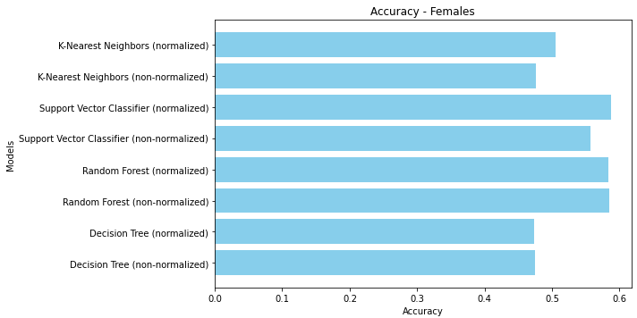In the accuracy comparison for female attraction level detection, the Support Vector Classifier (SVC) with normalization achieves the highest accuracy, closely followed by the Random Forest model with normalization. This indicates that these models are more effective in handling the classification task. The normalized K-Nearest Neighbors (KNN) also performs better than its non-normalized counterpart, though it still falls short compared to SVC and Random Forest. Interestingly, the Decision Tree models, both normalized and non-normalized, show the lowest accuracy, suggesting that they might not capture the underlying patterns in the data as well as the other models. Normalization consistently improves model performance, reinforcing its importance in preprocessing for this dataset.
Precision
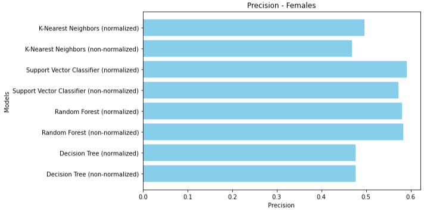In the precision comparison for female attraction level detection, the Support Vector Classifier (SVC) with normalization achieves the highest precision, indicating its superior ability to correctly identify positive instances while minimizing false positives. The Random Forest model also demonstrates high precision, both with and without normalization, making it a reliable choice for this classification task. The K-Nearest Neighbors (KNN) model shows improved precision with normalization, though it still trails behind SVC and Random Forest. The Decision Tree models exhibit the lowest precision among the models, with normalization providing only a slight benefit. Overall, normalization enhances precision across all models, underscoring its importance in improving model performance for accurately detecting attraction levels in the female dataset.
Recall
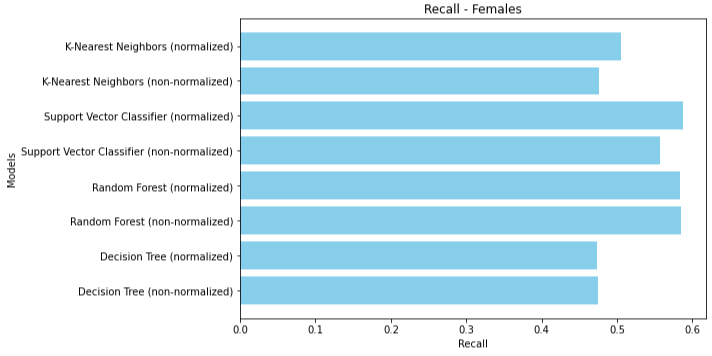In the recall for female attraction level detection, the Support Vector Classifier (SVC) with normalization achieves the highest recall, indicating its superior ability to correctly identify positive cases. The Random Forest model, both normalized and non-normalized, also shows strong recall performance, suggesting it effectively captures the relevant patterns in the data. The K-Nearest Neighbors (KNN) model exhibits an improvement with normalization, though its recall remains lower than SVC and Random Forest. The Decision Tree models have the lowest recall values among the models, with normalization providing only a marginal benefit. Overall, normalization consistently enhances recall across all models, emphasizing its importance in improving model sensitivity for detecting attraction levels in the female dataset.
F1 Score
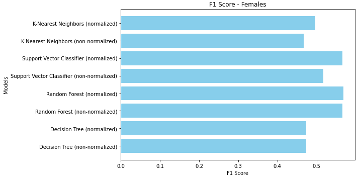The F1 score comparison for female attraction level detection reveals that the Support Vector Classifier (SVC) with normalization achieves the highest F1 score, indicating a balanced performance in terms of both precision and recall. The Random Forest model, especially when normalized, also shows a high F1 score, making it another strong contender for this classification task. The K-Nearest Neighbors (KNN) model sees a significant improvement with normalization, but it still falls short compared to SVC and Random Forest. The Decision Tree models exhibit the lowest F1 scores, with normalization providing only a slight enhancement. Overall, normalization consistently boosts the F1 score across all models, highlighting its critical role in optimizing the performance for detecting attraction levels in the female dataset.
Males
Accuracy
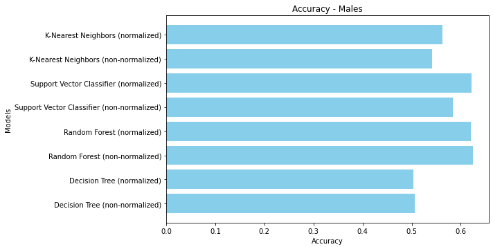For male attraction level detection, the accuracy comparison reveals a similar trend to the female dataset, with the normalized Support Vector Classifier (SVC) again leading in accuracy. The Random Forest model, particularly when normalized, also shows strong performance, making it a reliable choice for this classification task. The K-Nearest Neighbors (KNN) benefits significantly from normalization, outperforming its non-normalized version. The Decision Tree models, while improved with normalization, still lag behind SVC and Random Forest in accuracy. Overall, these results highlight the effectiveness of SVC and Random Forest models in accurately detecting attraction levels, with normalization playing a crucial role in enhancing model performance.
Precision
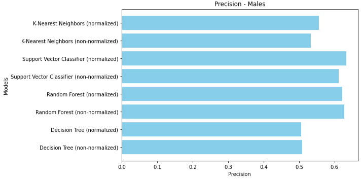For male attraction level detection, the precision comparison reveals that the Support Vector Classifier (SVC) with normalization again leads in precision, closely followed by the Random Forest model with normalization. This trend is consistent with the female dataset, highlighting the robustness of these models in accurately identifying positive cases. The K-Nearest Neighbors (KNN) model shows a notable improvement in precision with normalization, though it still lags behind SVC and Random Forest. The Decision Tree models, while exhibiting the lowest precision, benefit from normalization, which slightly enhances their performance. These results emphasize the effectiveness of SVC and Random Forest models in minimizing false positives in the male dataset, with normalization playing a crucial role in boosting precision for all models.
Recall
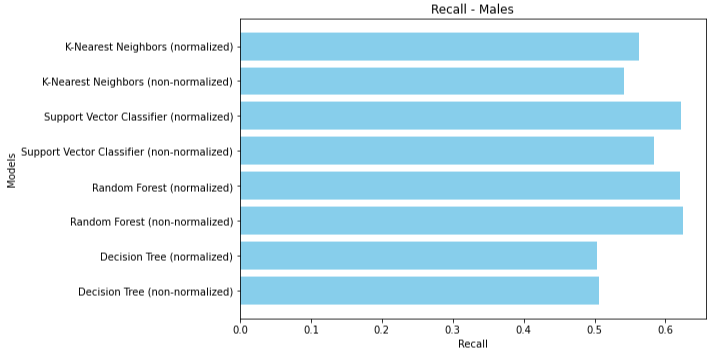For male attraction level detection, the recall comparison indicates that the Support Vector Classifier (SVC) with normalization again leads in recall, closely followed by the Random Forest model with normalization. This trend mirrors the results seen in the female dataset, highlighting the robustness of these models. The K-Nearest Neighbors (KNN) model shows a notable improvement with normalization, though it still lags behind SVC and Random Forest. The Decision Tree models, while exhibiting the lowest recall, benefit from normalization, which slightly enhances their performance. These results underscore the effectiveness of SVC and Random Forest models in correctly identifying positive cases in the male dataset, with normalization playing a crucial role in boosting recall for all models.
F1 Score
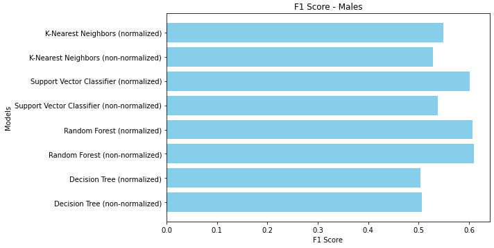The F1 score demonstrates that the Support Vector Classifier (SVC) with normalization again leads with the highest F1 score, closely followed by the Random Forest model with normalization. This pattern aligns with the observations from the female dataset, emphasizing the robustness of these models. The K-Nearest Neighbors (KNN) model benefits notably from normalization, achieving a much-improved F1 score, although it still trails behind SVC and Random Forest. The Decision Tree models, while showing the lowest F1 scores, gain some improvement with normalization. These results underscore the importance of SVC and Random Forest models in achieving a balanced precision and recall, with normalization playing a pivotal role in enhancing the F1 scores for all models in the male dataset.
In the comparative analysis of machine learning techniques for detecting attraction levels, the Support Vector Classifier (SVC) consistently performed best across all performance metrics (accuracy, precision, recall, and F1 score) for both male and female datasets, especially when normalized. The Random Forest model also demonstrated strong performance, slightly trailing SVC, with significant improvements upon normalization. The K-Nearest Neighbors (KNN) model benefited notably from normalization but still lagged behind SVC and Random Forest. The Decision Tree models consistently exhibited the lowest performance across all metrics, even with normalization. Males generally achieved slightly higher accuracy, precision, recall, and F1 scores compared to females, indicating that the models might be capturing patterns in the male dataset more effectively. Normalization played a critical role in enhancing the performance of all models, emphasizing its importance in preprocessing. In this context, accuracy indicates the overall correctness of the model, precision measures the ability to correctly identify positive instances, recall assesses the model's ability to capture all relevant instances, and the F1 score provides a balance between precision and recall. The model and dataset did not perform well for the classification task, achieving at best around 60% accuracy and similar results in other metrics. This poor performance is likely related to the rounding of average attractiveness level values for data instances to fit the model in the classification operation. For instance, a data instance with a label of 3.4967 being rounded down to 3 can cause inaccuracies. Such rounding likely contributed to the performance issues observed in the model.
MeBeauty - Classification
Classification was performed by rounding att_level values to obtain integers. The MeBeauty dataset scores range from 0 to 10. The results for accuracy, precision, recall, and F1 score are shown below for both male and female subsets.
MeBeauty
Females
Accuracy
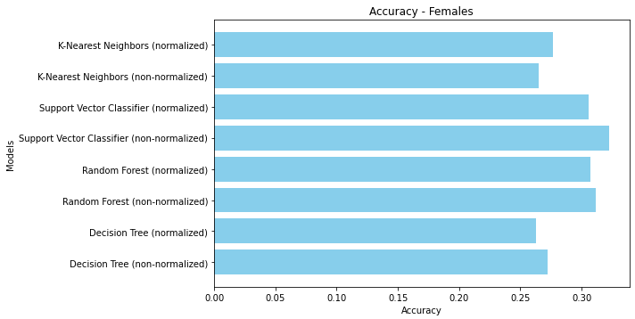The accuracy comparison mirrors the trends observed in the males, with the Support Vector Classifier (SVC) with normalization achieving the highest accuracy, closely followed by the non-normalized SVC. The Random Forest models show comparable performance, indicating their robustness across different datasets. The K-Nearest Neighbors (KNN) model shows improved accuracy with normalization but still lags behind SVC and Random Forest. The Decision Tree models, although benefiting slightly from normalization, exhibit the lowest accuracy, similar to the male dataset. Overall, while SVC and Random Forest models perform better than KNN and Decision Tree, the accuracy levels suggest that this classification task remains challenging, and the models' performance could be enhanced with further optimization or additional data preprocessing techniques.
Precision
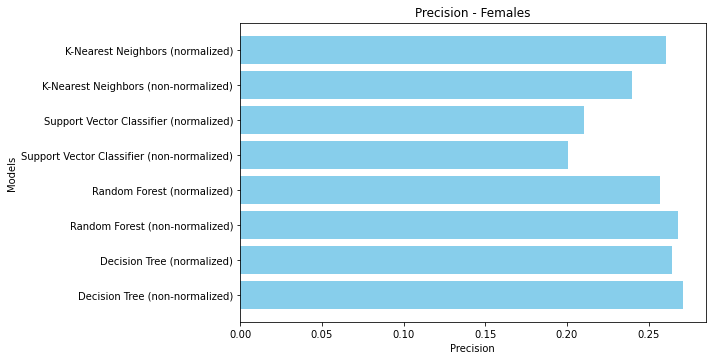In the precision comparison for female attraction level detection, the Decision Tree model with non-normalization surprisingly achieves the highest precision, suggesting its effectiveness in correctly identifying positive instances while minimizing false positives in this context. The Random Forest models follow closely, indicating robust performance, particularly when normalized. The Support Vector Classifier (SVC) performs bad and shows a noticeable drop in precision without normalization. The KNN with normalization also shows significant improvement. These results highlight the importance of normalization in improving model precision, with Decision Tree and Random Forest standing out as the most precise models for this dataset.
Recall
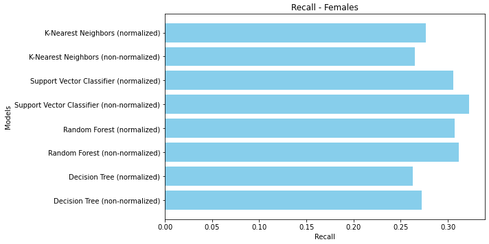The Support Vector Classifier (SVC) with normalization achieves the highest recall, indicating its effectiveness in identifying positive instances. The non-normalized SVC also performs well but slightly lower than its normalized counterpart. The Random Forest models show similar recall performance, with a slight advantage for the normalized version. The K-Nearest Neighbors (KNN) model, while benefiting from normalization, still falls short compared to SVC and Random Forest. The Decision Tree models exhibit the lowest recall values, even with normalization providing only a marginal benefit. These results highlight the importance of normalization in improving recall, with SVC and Random Forest models being the most effective in capturing positive instances in the female dataset.
F1 Score
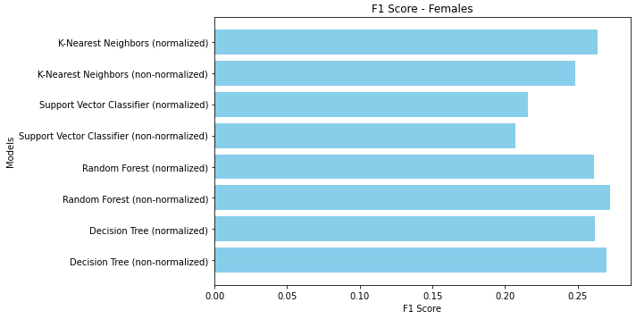For female attraction level detection, the F1 score comparison shows a similar trend, with the K-Nearest Neighbors (KNN) model with normalization achieving the highest F1 score. The non-normalized KNN also performs well but lags slightly behind the normalized version. The Support Vector Classifier (SVC) exhibits strong performance, particularly when normalized, following closely behind KNN. The Random Forest models show comparable F1 scores, with the normalized version having a slight advantage. The Decision Tree models, while improved with normalization, have the lowest F1 scores. These results emphasize the critical role of normalization in balancing precision and recall, with KNN and SVC models being particularly effective in the female dataset.
Males
Accuracy
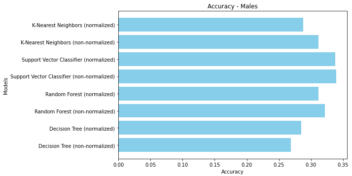The models generally show modest performance, with the highest accuracy around 30%. The Support Vector Classifier (SVC) with normalization again achieves the best results, followed closely by the non-normalized version of SVC. The Random Forest models, both normalized and non-normalized, also perform reasonably well but fall short of SVC's accuracy. The K-Nearest Neighbors (KNN) model demonstrates a slight improvement with normalization, yet its accuracy remains lower compared to SVC and Random Forest. The Decision Tree models, while showing some benefits from normalization, exhibit the lowest accuracy among the models. This suggests that SVC and Random Forest are more effective for this dataset, although the overall accuracy indicates there is room for improvement in the classification performance.
Precision
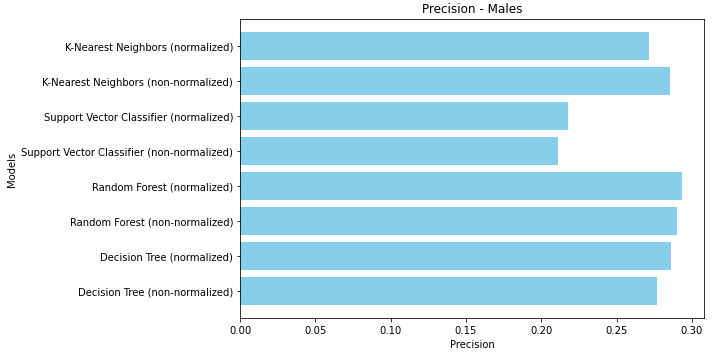For male attraction level detection, the precision comparison reveals a slightly different trend, with the Random Forest with normalization achieving the highest precision. The Decision Tree models, both normalized and non-normalized, also perform well, indicating their consistent reliability across different contexts. The K-Nearest Neighbors (KNN) shows good precision but lags behind Decision Tree and Random Forest. The Support Vector Classifier (SVC) models, despite some improvement with normalization, still have the lowest precision. These results underscore the critical role of normalization in enhancing model precision, with Decision Tree and Random Forest models being particularly effective in minimizing false positives in this classification task.
Recall
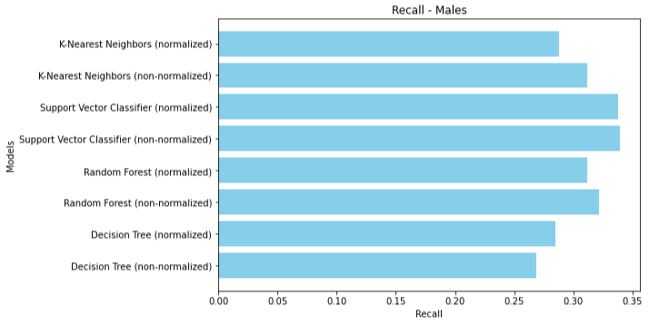For male attraction level detection, the recall comparison shows that the Support Vector Classifier (SVC) with normalization again leads with the highest recall, closely followed by the non-normalized SVC. The Random Forest models perform similarly well, with the normalized version slightly outperforming the non-normalized one. The K-Nearest Neighbors (KNN) model shows improved recall with normalization but still lags behind SVC and Random Forest. The Decision Tree models, despite some improvement with normalization, exhibit the lowest recall among the models. These findings underscore the critical role of normalization in enhancing recall, with SVC and Random Forest models being particularly effective in identifying positive instances in the male dataset.
F1 Score
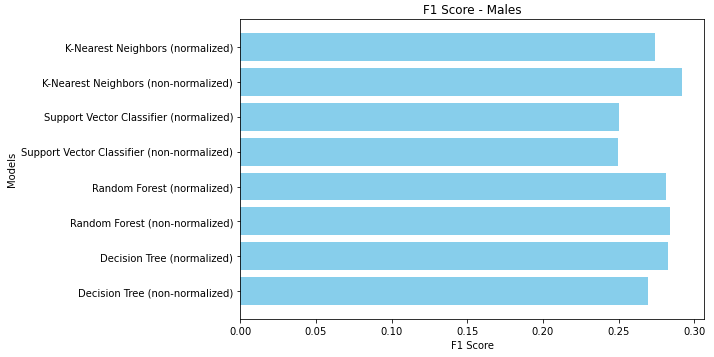In the F1 score comparison for male attraction level detection, the K-Nearest Neighbors (KNN) model with normalization achieves the highest F1 score, indicating a balanced performance in terms of both precision and recall. The non-normalized KNN also performs well but is slightly lower than its normalized counterpart. The Support Vector Classifier (SVC) follows closely, showing strong performance, particularly when normalized. The Random Forest models exhibit similar F1 scores, with a slight edge for the normalized version. The Decision Tree models, while benefiting from normalization, display the lowest F1 scores among the models. These results highlight the importance of normalization in achieving balanced model performance, with KNN and SVC being particularly effective for the male dataset.
In the comprehensive analysis for attraction level detection, the K-Nearest Neighbors (KNN) with normalization emerged as the best-performing model overall, achieving the highest F1 scores for both males and females, indicating a balanced precision and recall. Conversely, the Decision Tree models consistently exhibited the worst performance across all metrics, despite some improvement with normalization. For precision, the Decision Tree model with non-normalization surprisingly achieved the highest precision for females, while the Random Forest with normalization was most precise for males. This highlights the models' effectiveness in correctly identifying positive instances while minimizing false positives. Overall, females and males showed similar performance trends, with normalization generally enhancing model performance. Accuracy, which measures the overall correctness of the models, was modest across the board, suggesting room for improvement. Precision, recall, and the F1 score provided deeper insights into the models' capabilities, with precision emphasizing the reduction of false positives and recall focusing on capturing all relevant instances. Despite the relatively low accuracy (around 30%), the balanced performance indicated by the F1 scores suggests that while the models are not highly successful, they still offer a reliable baseline. The issues might be tied to data preprocessing, such as the rounding of average attractiveness values, which could impact model performance.